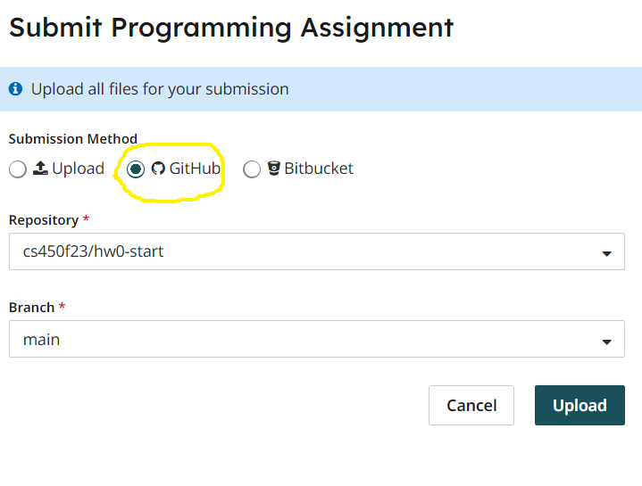

Homework 0
Last updated: Sat, 16 Sep 2023 18:12:33 -0400
Out: Wed Sep 06, after first class
Due, Part 1: Sun Sep 10, 23:59 EST
Due, Part 2: Sun Sep 17, 23:59 EST
Overview
This homework is a warmup to make sure that everyone is set up to complete the course.
Since this course is about using language to communicate effectively, hws will be graded on more than just correctness. Specifically, this hw will be graded accordingly:
part 1 (4 pts)
correctness (10 pts)
style (see below for details) (5 pts)
README (1 pt)
have a github.com account and know how to execute basic git commands,
have Racket installed and know how to run basic programs,
understand basic functional programming (in Racket),
know how to submit hw to Gradescope for this class.
Requirements
Homework solution code must be stored in a private github repository visible to only the student and the instructor. (If you fork the hw0 starter code (see Part 1) the permissions should be already set up correctly.)
In addition, a homework repo must satisfy the following:
It should have a hw0.rkt file in the repository root directory.
The hw0.rkt file must export (using provide) the definitions needed for grading. The easiest way to ensure that your solution file can be graded is to put as the second line in the file:
This automatically provides all definitions in the file. (The first line should be #lang racket)
The repository must have appropriate commit messages. See How to Write a Git Commit Message if you are unsure how to write a commit message.
Submitting
Do not submit until all code has been thoroughly tested, independent of the autograder, and you are reasonably sure the assignment is complete and correct.
The autograder is not a software development tool so please don’t use it as one.
If you submit and get an autograder error, this means your submission is not complete and correct and it’s up to you to figure out why.
The course staff is happy to help, but cannot do so if students don’t explain what they’ve tried first (e.g., "why is the autograder giving an error?" is not a valid question).
The grading criteria (i.e., test suite) is subject to change. This means that the visible grade seen during submission is not the final grade.
When ready, submit this assignment to Gradescope hw0 using the "GitHub" submission feature with the forked hw0 repository selected.

1 Part 1
1.1 GitHub
Create a GitHub account (if you don’t already have one)
Choose and install a GitHub client on your computer. You may choose either a GUI client, or a command line one.
With help from the Getting started with Git and Using Git documentation, figure out how to fork the cs450f23-accounts repository.
Then clone your cs450f23-accounts fork to your computer.
Create a new (local) branch of this clone. Call it hw0. (It’s generally not recommended to push directly to the main branch of a fork.)
- Create a new (empty) file whose name is your github user name and then:
add the file to your new branch,
commit it,
and push it to your fork of cs450f23-accounts.
Note that github will ask for a password when you push. If you wish, you may instead find it easier to connect to github using SSH. On github.com create a pull request: from the hw0 branch of your fork, to the original cs450f23-accounts repo main branch.
Now you are ready to begin working on this homework.
1.2 Racket
Download Racket (for your platform) and install it. The DrRacket IDE is easiest to use (especially for viewing images), but several other editors have Racket support as well.
clone the hw0 starter code. (Note that you’ll only be able to see this repo after you’ve submitted your pull request from the GitHub part and it has been merged.)
The repo includes two files: hw0.rkt and tests.rkt. The first is where you’ll put hw solution code. The second is for testing your code (later) (you can ignore the test file for now).
Note that all Racket progams have #lang racket as the first line of code. (This directs the compiler to interpret the rest of the program as racket code.)
Also, provide exports a definition and require imports another file or library. In general, the Racket documentation will be a helpful resource this semester.
The tests.rkt file requires hw0.rkt and the rackunit testing library. We’ll discuss testing more in a future lecture, but feel free to try to figure out how to add test cases. (The hw will be graded using a test file like this one.)
All submitted code will be evaluated for correctness, but also readability, of which one component is style. In this course, all submitted code must follow the Racket Style Guide. The key points will also be emphasized in lecture.
1.3 Warmup
Read the Preface, Prologue, and Chapters 1.1-1.3 of How to Design Programs (2nd ed)
Do exercises 1-4 from the Textbook. Put your code in the hw0.rkt file from your fork of the hw0 starter code.
2 Part 2
2.1 More Exercises
Read Chapters 1.4-1.7 and 2.1-2.4 of the Textbook
Do exercises 4-30 from the Textbook. Put your code in the same hw0.rkt file from your fork of the hw0 starter code. All required defines should use the name specificed in the exercise and should be provided.
If an exercise requires a definition but does not specify a name, use the name of the exercise in all lower case, e.g., (define (exercise11 ....) ....).
If an exercise does not say to create a define, then you don’t need to provide anything.